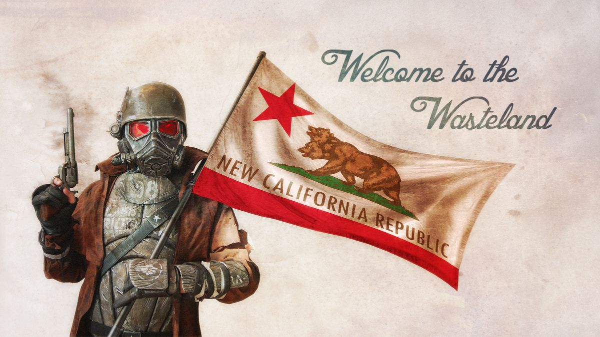

Haz que la legión pague
La República de Nueva California (NCR) fue fundada a partir de la comunidad de Shady Sands, establecida por sobrevivientes del Vault 15. Bajo el liderazgo visionario de Aradesh y posteriormente de su hija Tandi, evolucionó de un pequeño asentamiento a una nación expansiva que abarca gran parte de California
El NCR opera como una república democrática federal con su capital en Shady Sands. Cuenta con un presidente electo, un congreso bicameral y un sistema judicial. Sin embargo, la corrupción y la influencia de grandes corporaciones como la Corporación Brahmin han manchado sus ideales originales.
Desde sus modestos comienzos, el NCR ha expandido agresivamente sus fronteras, anexando territorios mediante la diplomacia y la fuerza. Su campaña en Mojave representa el esfuerzo más ambicioso hasta la fecha, buscando controlar la Presa Hoover y el Río Colorado.
El ejército del NCR es una de las fuerzas militares más grandes y mejor equipadas del mundo post-apocalíptico, aunque sufre de líneas de suministro sobre extendidas y tropas mal entrenadas. Sus Rangers son considerados la élite de sus fuerzas.